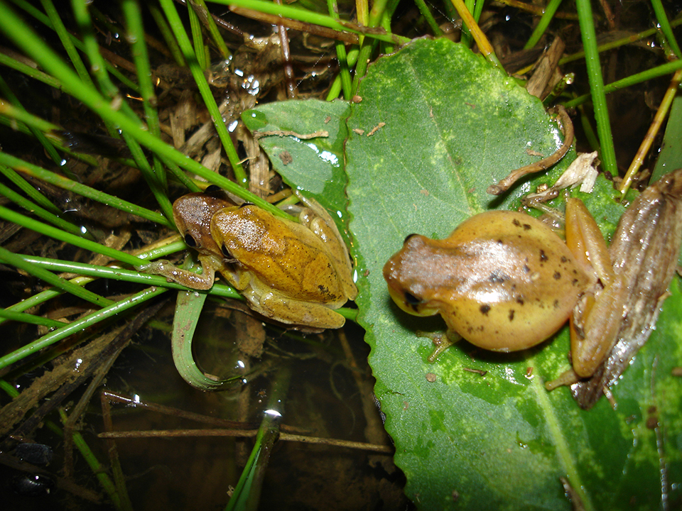
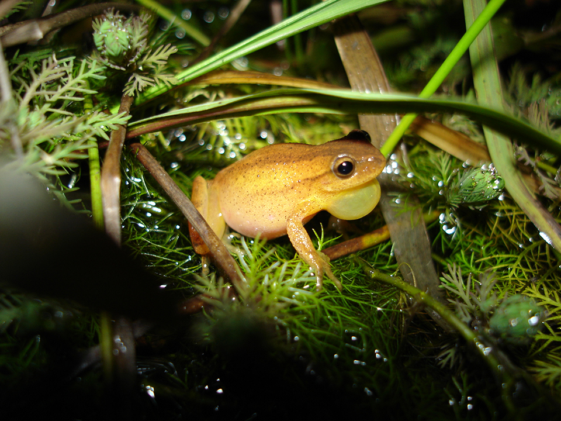
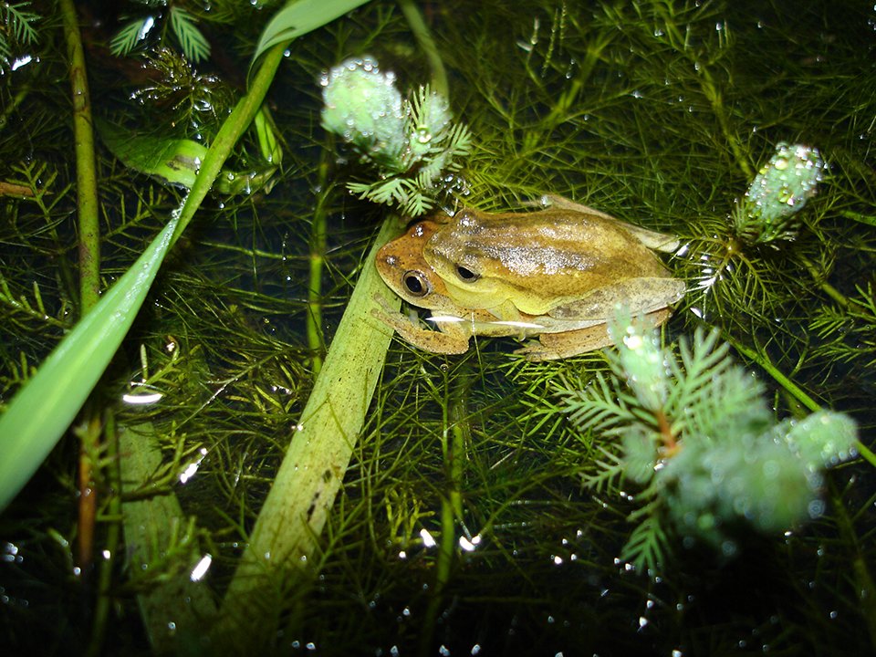

De corpo pequeno, castanho-alaranjado, com linhas elaboradas mais escuras no dorso, por vezes em forma de ampulheta, e um ventre esbranquiçado. Uma das espécies mais comuns do Brasil. Ocorre em áreas abertas sobre gramíneas e arbustos associados a lagoas, com registro em todos os países da América do Sul, exceto no Chile. Pode ser encontrada em lagoas de áreas rurais e mesmo próximo a áreas urbanas, ao longo de todos os meses do ano.
Suas populações podem ser bem grandes, e o coro à noite é bastante ruidoso. Alimentam-se principalmente de aranhas, percevejos e cigarrinhas jovens. A reprodução ocorre no período chuvoso e os ovos são depositados sobre plantas aquáticas, quando eclodem os girinos desenvolvem-se no corpo d'água.
  